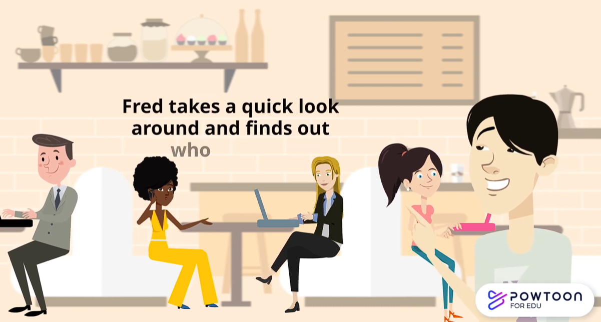
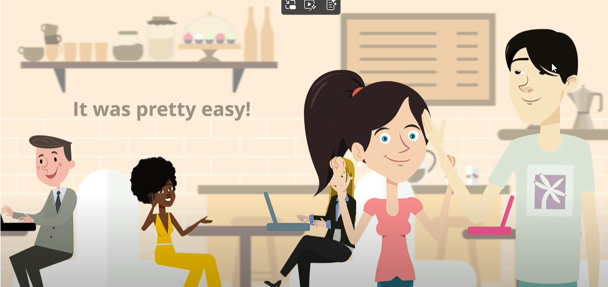

Skimming and Scanning in Reading
When you need to read efficiently, skimming and scanning are the two most essential speed-reading strategies. While they are often mentioned together, they serve completely different purposes.
⚡ Skim = reading for the "big picture"
Speed-reading to grasp the general overview or main idea of a text. You intentionally skip details to look at the overall structure.
"What is this text about?"
Speed-reading to grasp the general overview or main idea of a text. You intentionally skip details to look at the overall structure.
"What is this text about?"
🔍 Scan = reading for specific information
Darting your eyes across a text to locate a specific piece of information — a name, date, statistic or keyword. You do not read the sentences; you only look for the target.
"Where exactly is X?"
Darting your eyes across a text to locate a specific piece of information — a name, date, statistic or keyword. You do not read the sentences; you only look for the target.
"Where exactly is X?"
1. How and when do I use them?
⚡ Skimming: reading for the "big picture"
When to use it
- Pre-reading a chapter before studying it in depth.
- Reviewing a text you have already read to refresh your memory.
- Deciding if a research paper or article is relevant to your needs.
How to do it
- Read the title and subtitles: they give you the framework of the text.
- Read the first and last paragraphs: authors usually introduce and conclude their main arguments there.
- Read the first sentence of every paragraph: this is typically the topic sentence.
- Focus on text features: bold words, bullet points, charts and diagrams.
🔍 Scanning: reading for specific information
When to use it
- Finding a specific date in a history book.
- Looking up a word in a dictionary.
- Checking a schedule for a train departure time.
- Finding a specific quote or statistic to support an essay.
How to do it
- Identify your keywords: know exactly what word, phrase or format (a number for a year, a capital letter for a name) you are looking for before you start.
- Move quickly: let your eyes slide rapidly down the page in a Z-pattern or U-pattern.
- Use your finger or a pen: guide your eyes along the lines to keep your focus sharp.
- Stop and read closely only when you locate your keyword, to get the correct context.
Direct comparison
| Feature | Skimming ⚡ | Scanning 🔍 |
|---|---|---|
| Goal | Understand the overall gist / main idea. | Locate specific details or keywords. |
| Reading method | Reading selective parts (introductions, headings). | Moving eyes rapidly without reading sentences. |
| End result | You know what the text is about. | You found the exact fact or answer you needed. |
2. In action: Finding Suzie (20 seconds)
Fred is looking for his friend Suzie in a busy café. This is what he knows about her:
- long dark hair
- a red hair tie
- a pink top
- one hand raised to her head
Scan the café scene and find Suzie before the timer stops. Do not look at every face — scan for the features above.
20s

Show where Suzie is

3. Watch: the whole video
Watch the full video together. Notice how Fred looks around the café, and how he finally finds Suzie.
Practice: The Records Room
Use both techniques on three Week 9 documents. Skim for the gist, then scan for the detail.